Visualizing data - with R
IFREMER, Sète, April 2017
Yan Holtz
yan1166@hotmail.com | www.r-graph-gallery.com
Daily Meal
Daily Meal

What is DataViz?
"Data visualization refers to the techniques used to communicate data or information by encoding it as visual objects (e.g., points, lines or bars) contained in graphics." Wikipédia

Data visualization is part of the Data Science Process
Tools available for Datavisualization

About R
"R is a free software environment for statistical computing and graphics." The R Project

About R
"R is a free software environment for statistical computing and graphics." The R Project
1+1
## [1] 2
About R
"R is a free software environment for statistical computing and graphics." The R Project
1+1
## [1] 2
plot(1:10, 1:10)

Why R?
- Ecosystem - Pipeline: import / clean / transform / analyse / calculate / modelize / visualize / report
- Free and Open Source
- Reproducibility:
- Share the data analysis process, not just the final product
- Validation of results by others
- Re-run analysis when data changes
- share, edit, remix...
- > 10K Librairies
- Very active community
- Strong graphic capabilities
R is groooooowing


Case study

The GapMinder Dataset
Population, Life expectency and Gross Domestic Product per capita for 142 countries and 12 years.
library(gapminder)
head(gapminder)
Let's start simple
data=subset(gapminder, year==2007)
plot(data$lifeExp ~ data$gdpPercap)
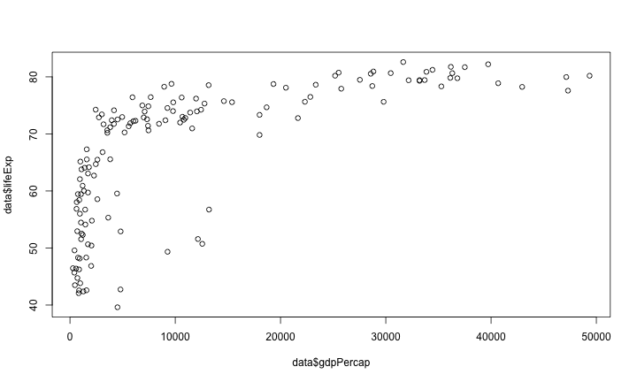
Let's improve it
Take a few minutes: what would you do to communicate this result? ...
Let's improve it
Take a few minutes: what would you do to communicate this result? ...
- Title
- Axis names
- Shape
- Color
- Legend
- Add information
- Interactivity
- Animation
- Reproductibility
- Share it
Add title and axis names
plot(data$lifeExp ~ data$gdpPercap,
xlab="Gdp per capita", ylab="Life Expectancy",
main="Features of countries in 2007")

Change shapes
plot(data$lifeExp ~ data$gdpPercap,
xlab="Gdp per capita", ylab="Life Expectancy",
main="Features of countries in 2007",
pch=20, cex=3)
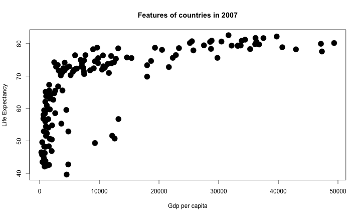
Add colors
plot(data$lifeExp ~ data$gdpPercap,
xlab="Gdp per capita", ylab="Life Expectancy",
main="Features of countries in 2007",
pch=20, cex=3, col="blue")
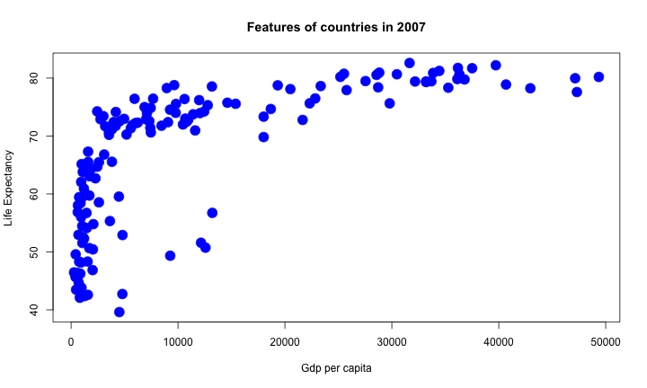
About colors in R
Color names
- Color number
- RGB
- R Color Brewer
plot(lifeExp ~ gdpPercap, data=data,
pch=20, cex=4, col="forestgreen")
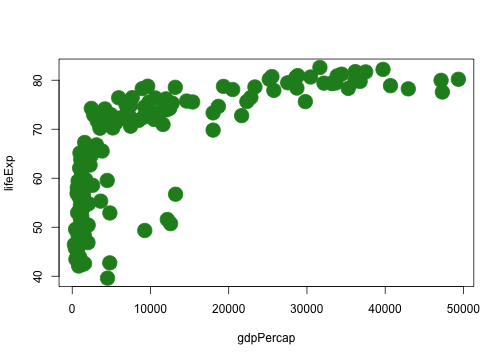 Get all the 657 possibilities with
colors()
About colors in R
- Color names
Color number
- RGB
- R Color Brewer
plot(lifeExp ~ gdpPercap, data=data,
pch=20, cex=4, col=colors()[18])
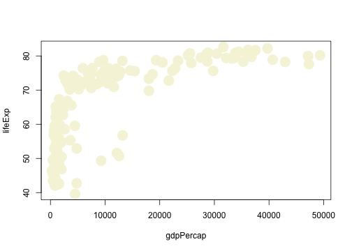
About colors in R
- Color names
- Color number
RGB
- R Color Brewer
plot(lifeExp ~ gdpPercap, data=data,
pch=20, cex=5, col=rgb(0.2,0.3,0.8,0.4))
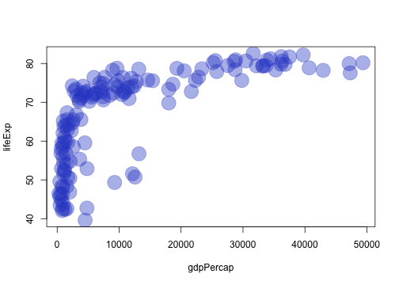
About colors in R
- Color names
- Color number
- RGB
R Color Brewer
library(RColorBrewer)
pal <- brewer.pal(5, "Set1")
pal
## [1] "#E41A1C" "#377EB8" "#4DAF4A" "#984EA3" "#FF7F00"

Map a color to a variable
# attribute a color to each continent:
my_colors=pal[as.numeric(data$continent)]
# use this vector as color for the plot
plot(lifeExp ~ gdpPercap, data=data, pch=20, cex=3, col=my_colors)
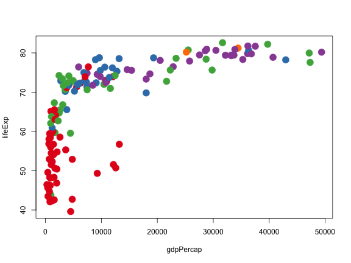
Add a legend
#plot
my_colors=pal[as.numeric(data$continent)]
plot(lifeExp ~ gdpPercap, data=data, pch=20, cex=3, col=my_colors)
#add legend
legend("bottomright", legend=levels(data$continent), col=pal, pch=20, bty="n", pt.cex=3, horiz = F)
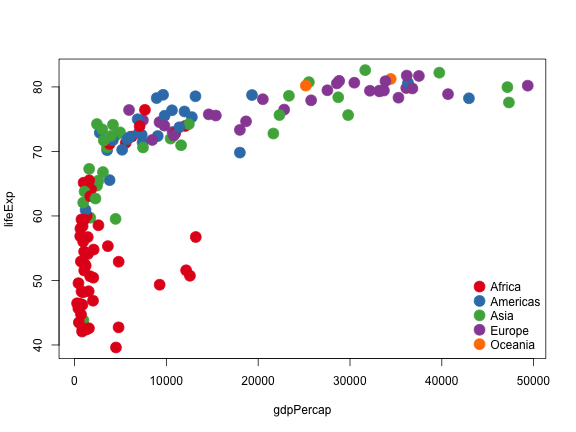
Finally
# Map the color:
library(RColorBrewer)
pal <- brewer.pal(5, "Set1")
my_colors=pal[as.numeric(data$continent)]
# Make the plot
par(mar=c(3,3,2,2)) # Margin
plot(data$lifeExp ~ data$gdpPercap,
# titles
xlab="Gross Domestic Product per capita", ylab="Life Expectancy",
main="Features of countries in 2007",
# color
col=my_colors,
# shapes
pch=20, cex=3,
# no box:`
bty="l")
#add legend
legend("bottomright", legend=levels(data$continent), col=pal, pch=20, bty="n", pt.cex=3, horiz = F)
Getting crazy??


"Help and Inspiration concerning R graphics"
Individual pages

Portfolio pages

The Gallery needs you!


The Magic of GGplot2
The Magic of GGplot2
library(ggplot2)
ggplot(data,
aes(gdpPercap, lifeExp, size = pop, color = continent, frame = year)) +
geom_point()

About GGplot2
- Created by Hadley Wickham in 2005
- Based on Leland Wilkinson's book: The Grammar of Graphics
- "tries to take the good parts of base and lattice graphics and none of the bad parts"
- 2 modes:
qplot()and ggplot()

Learning GGplot2
- The R Graphics Cookbook by Winston Chang
- The ggplot2: Elegant Graphics for Data Analysis by Hadley Wickham
- Learn with examples with the Ggplot2 section of the R graph gallery


About the tidyverse


Faceting
ggplot(gapminder, aes(gdpPercap, lifeExp, size = pop, color = continent, frame = year)) +
geom_point() +
xlim(0, 60000) +
facet_wrap(~year)
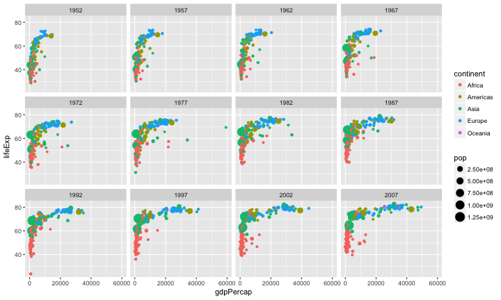
Faceting (again)
ggplot(data, aes(gdpPercap, lifeExp, size = pop, color = continent, frame = year)) +
geom_point() +
xlim(0, 60000) +
facet_wrap(~continent, nrow=3) +
theme(legend.position="none")
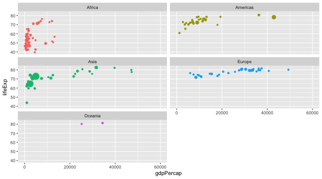
Boxplot
ggplot(gapminder, aes(x=continent, y=lifeExp, color=continent, fill=continent)) +
geom_boxplot(alpha=0.3) +
theme(legend.position="none")

Warning: always check distribution
ggplot(gapminder, aes(x=continent, y=lifeExp, color=continent, fill=continent)) +
geom_violin(alpha=0.3) +
theme(legend.position="none")

Warning: always check distribution
ggplot(gapminder, aes(x=continent, y=lifeExp, color=continent, fill=continent)) +
geom_boxplot(alpha=0.3) +
geom_jitter(color="grey", size=0.8) +
theme(legend.position="none")
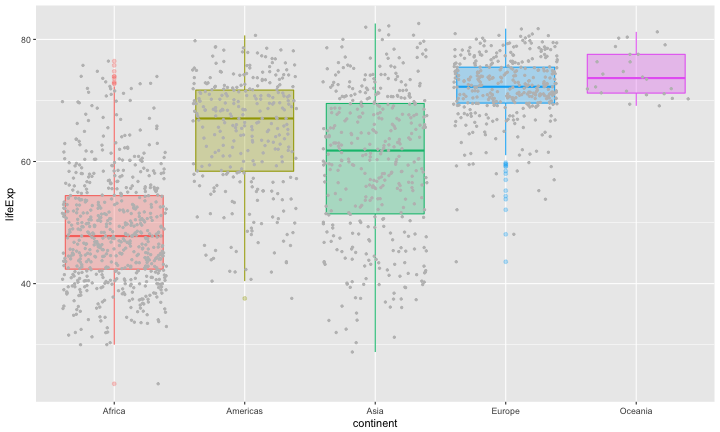
With Data preparation
library(dplyr)
gapminder %>%
select(continent, year, pop) %>%
group_by(year, continent) %>%
summarize(sum_pop = sum(as.numeric(pop))) %>%
ggplot( aes(fill=continent, y=sum_pop, x=year)) +
geom_bar(stat="identity") +
ylab("Population per continent")

With Data preparation
library(dplyr)
gapminder %>%
filter(continent=="Asia") %>% filter(pop > 50000000) %>%
select(country, year, pop) %>%
group_by(year, country) %>%
ggplot( aes(x=year, y=pop, color=country, fill=country)) +
geom_area() +
facet_wrap(~country)+
theme(legend.position="none")

What's next?
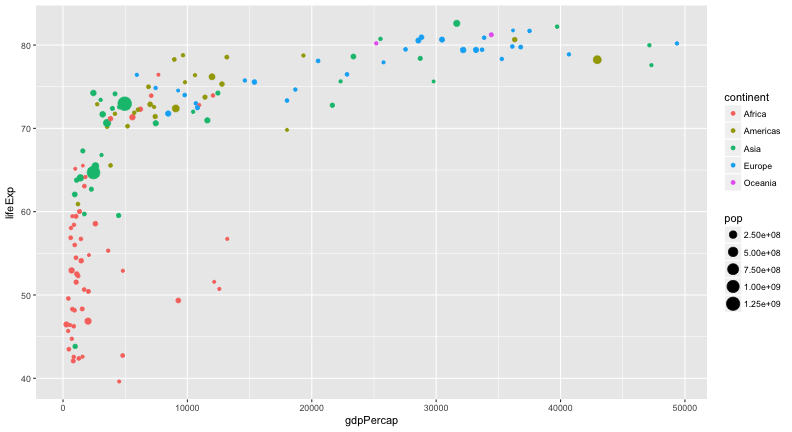
Diving into Interactive charts
- Zoom on a specific part
- Get information when hovering
- Make groups appear / disappear
- export directly
- move on axis
- Play with your chart
- Make your dataviz alive!
HTML WIDGETs

Plotly

- "Plotly is the modern platform for agile business intelligence and data science"
- https://plot.ly/
- and a html widget as well
library(plotly)
- Make a plot with plot_ly() or ggplotly()
Apply plotly to the gapminder dataset
# Basic ggplot2 chart
p=ggplot(data,
aes(gdpPercap, lifeExp, size = pop, color = continent, text=country)) +
geom_point()
# Made interactive with plotly
library(plotly)
ggplotly(p)
If you know ggplot2, you know how to do interactive charts!
Apply plotly to the gapminder dataset
Leaflet
D3network
D3heatmap
Communicate your result
Communicate your result
- Copy and paste in powerpoint? in an e-mail?
- Make a figure for publication with handmade modification?
- Are you sure you can provide exactly the same result as last time?
Communicate your result
- Copy and paste in powerpoint? in an e-mail?
- Make a figure for publication with handmade modification?
- Are you sure you can provide exactly the same result as last time?

Most Published Research Findings Are False

We need reproductibility, And R is the perfect tool for that.
Introducing RMarkDown

- Turn your analysis into reports
- Fully reproducible
- Weave together narrative text and code
- Many output formats: PDF, HTML, websites...
Header
---
title: "Analysing the Gapminder dataset"
author: "Yan Holtz"
date: '`r as.character(format(Sys.Date(), format="%d/%m/%Y"))`'
output:
html_document:
toc: yes
---
Title & text
---
title: "Analysing the Gapminder dataset"
author: "Yan Holtz"
date: '`r as.character(format(Sys.Date(), format="%d/%m/%Y"))`'
output:
html_document:
toc: yes
---
# 1- Introduction
Hi Robert, here is my reproducible analysis concerning the Gapminder dataset!
R code !
---
title: "Analysing the Gapminder dataset"
author: "Yan Holtz"
date: '`r as.character(format(Sys.Date(), format="%d/%m/%Y"))`'
output:
html_document:
toc: yes
---
# 1- Introduction
Hi Robert, here is my reproducible analysis concerning the Gapminder dataset!
# 2- Get data
The data are included in the gapminder library
\```{r}
library(gapminder)
head(gapminder)
\```
Basic HTML output

Pimp my RMD

Introduction to shiny applications
Introduction to shiny applications

Introducion to shiny applications

Ui.R
ui <- fluidPage(
# Widget to choose year
selectInput(
"year", "Select a year!",
choices=unique(gapminder$year), selected=1952
),
# Interactive plot
plotlyOutput("plot")
)
Server.R
server <- function(input, output) {
output$plot <- renderPlotly({
# Select data
data=subset(gapminder, year==input$year)
# Make the plot
p=ggplot(data,
aes(gdpPercap, lifeExp, size = pop,
color = continent, frame = year)) +
geom_point()
ggplotly(p)
})
}
Going further with Shiny

be open-minded!

From Dataviz to DataArt

{kind=link}


Take Home message
- Use R !
- The Tidyverse is your friend
- Interactive charts are just here!
- Make your analysis reproducible
- Explore new graphic methods
Yan Holtz
yan1166@hotmail.com
holtzyan.wordpress.com
Slide made with Slidify
And available on github.com/holtzy